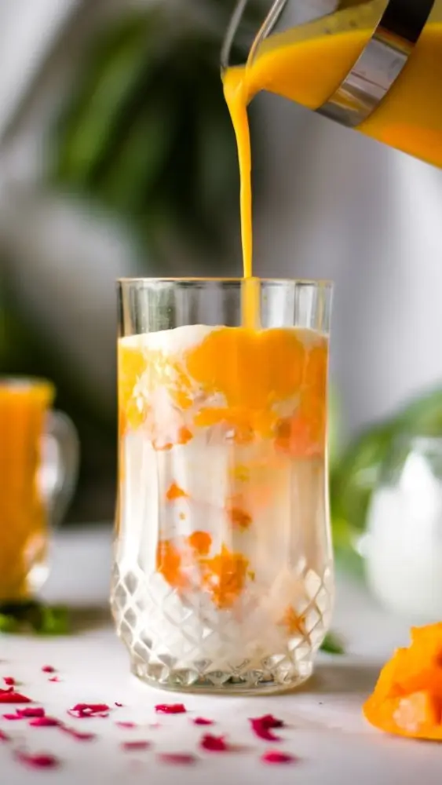
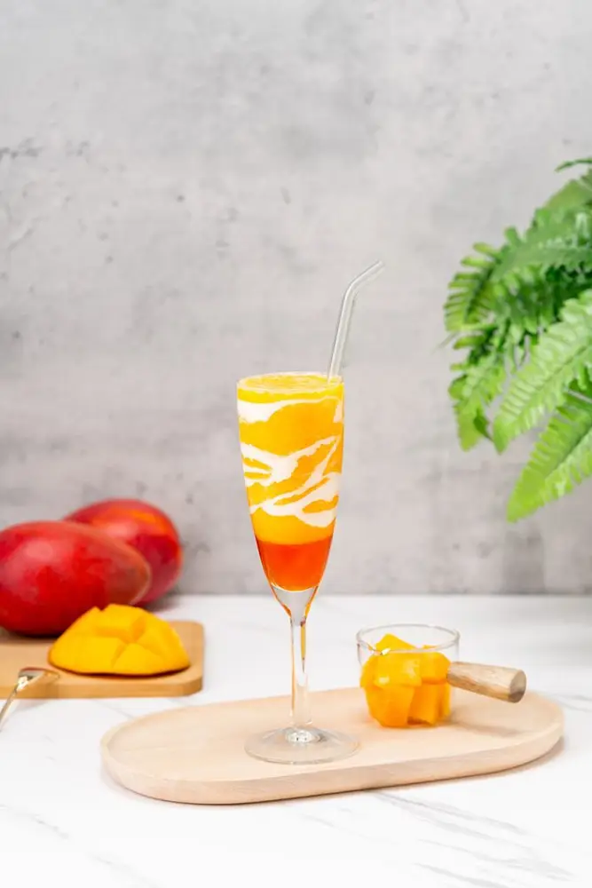

Articles / Recipes
Summer bash: Let’s make Mango Strawberry Mix!
2024-07-26 · Recipes, Recipes

Summertime is perfect for an outing with family and friends, from splashing in beaches to picnics under a canopy of trees. Feel like staying cool in style? Try out this Mango Strawberry Mix!
Read on to learn more!
Sweet dreams in a cup
Strawberry and mango go hand in hand with good reason. The light sweetness and slight tangy notes of strawberry blends with mango’s rich flavours, creating a layered symphony of tastes that’s sure to tingle your tastebuds!
Meanwhile, the cream top helps binds this symphony of flavours all together, while giving the overall experience an extra savoury, creamy boost.
What’s more, the layers of red and yellow, mixed with streaks of white, gives the drink a dreamy ethereal look.
Want to capture the beauty of the sunset? This is how you do it. Give this fruity smoothie a sip, and drift off into sweet dreams!


Mango Strawberry Mix
This colourful treat blends the sweet, tangy flavours of strawberry and mango, creating a delicious combo of taste and texture. Give it a try!
What you’ll need
How to make:
Mix the strawberry syrup with some water and fructose, then pour into a glass
Blend the mango syrup and ice cubes until smooth. Pour into the glass, making sure to not let both layers mix.
Blend the cream top powder with the fresh cream to form a milk foam. Pour in the foam, then swirl with the mango layer. Make sure not to mix with the strawberry. Enjoy!
Feel free to garnish with cubed mango, strawberry slices, or other toppings!
Give it a try!
Want to give our mango strawberry milkshake a try? Get started by picking up the ingredients with us. Contact us to learn more!